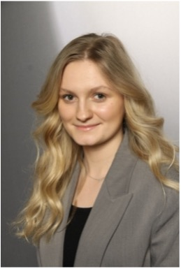
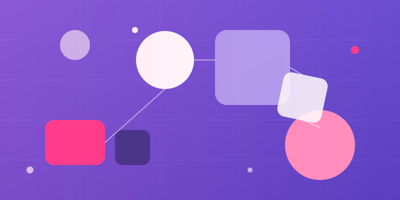

Nina Floeter
My interest lies in how good interaction emerges, between people, machines, and the systems they share. I'm currently completing my M.Sc. in Human-Centered Computing at Hochschule Reutlingen, building on a B.Sc. in Medical Informatics from the University of Tübingen.
Who I am

My path began with a B.Sc. in Medical Informatics in Tübingen, a field at the intersection of technology and human needs. In my M.Sc. in Human-Centered Computing in Reutlingen, I deepened that perspective, moving from the question of what a technology can do to how people actually experience it. Whether in the VR simulation WheelCity, in my work on social robots, or in analyzing design processes at Mercedes-Benz, I keep returning to the same lens: the perspective of the people using the system.
Selected Work

DesignOps Process Model
Master's Thesis · OngoingDevelopment of a DesignOps process model at Mercedes-Benz, following a Design Science Research approach embedded in a Human-Centered Design cycle. Grounded in a systematic literature review and a mixed-methods as-is analysis (participant observation, stakeholder survey, Figma artifact analysis, Jira ticket analysis), including BPMN 2.0 modeling of the HR-Designer-Developer workflow, a requirements catalog (GQM, MoSCoW), and a set of KPIs to evaluate the process. Practical implementation within the Time Management team.
WheelCity — VR Wheelchair Simulation
Advanced Research ProjectVR simulation of urban accessibility barriers, built in Unity/XR for the Pico HMD, recreating everyday obstacles wheelchair users face in urban environments. This application forms the technical foundation for the follow-up study described below.
Sensitizing Architects and Urban Planners through Active VR Task Completion
Study, built on WheelCityA study extending WheelCity with a task-based VR parcours, conducted with architects and urban planners as participants to directly sensitize this target group to the lived reality of wheelchair users. Methodology: between-subjects design (N=13), questionnaire instruments IPQ, IRI, PTDS, statistical analysis using paired t-tests and Cronbach's alpha.
Submitted as a paper, poster, and talk to Informatics Inside, an internal conference at Hochschule Reutlingen (May 2026) — not yet published, see "Publications" below.
AroMinder — Scent Diffuser Concept
Course Project · Interactive SystemsConcept for a scent diffuser to support people in early-stage dementia, developed in the Interactive Systems module together with a fellow student. Own role: research, concept, prototype, and project website.
Social Robots in Customer Service
Individual Term Paper · Cognitive SystemsSystematic literature review (Web of Science, IEEE Xplore, ACM Digital Library) on the use of social robots in customer service as a response to labor shortages. Two research questions were examined: which factors influence customer experience when interacting with social robots, and what challenges exist in implementing empathy and social competence. Concepts covered include emotion recognition, anthropomorphism, the uncanny valley, the CASA paradigm, and cultural differences in technology acceptance.
ITIL-Based Operation of an LLM Service
Group Coursework · M.Sc.Group project conceiving the ITIL V3-based operation of a large language model service, together with three fellow students. Covered comparative model evaluation, definition of KPIs, and considerations around scalability, security, and GDPR compliance, alongside a deeper look at retrieval-augmented generation and the strengths and limitations of LLMs.
From Tool Component to Standalone Product
Working Student & Practical Semester · Mercedes-BenzUI/UX modernization of an HR time-management tool: a tool that had previously been part of an older, larger system was independently conceived and designed by me as a new, standalone tool, with sole design responsibility from concept to final implementation.
Data & Process Management in Publishing
Working Student · Georg Thieme Verlag KGFirst working-student position in data and process management, focused on processes around the publishing workflow. Laid the foundation for a later understanding of structured processes that carried into the DesignOps work at Mercedes-Benz.
Graphical User Interfaces for R in Medical Applications
Bachelor's Thesis · Medical InformaticsComparative analysis of four R-based statistical tools (RStudio, R Commander, Jamovi, Deducer/JGR) for medical applications, based on custom criteria for functionality, usability, visualization, and system reliability. Testing included verifying individual functions across all four tools. Recommendation: RStudio for biometrics experts, Jamovi for physicians and medical students as occasional users.
Anonymization Tool for Medical Datasets
Student Project · Bachelor'sTeam project (Scrum) to develop a tool that calculates, based on datasets, which fields need to be anonymized, using a k-anonymity-based privacy factor to assess re-identification risk.
Publications
Sensitization to the Lived Reality of Wheelchair Users through Active Task Completion in VR
Submitted to Informatics Inside (internal university conference), May 2026
Status: in preparation, not yet published
Methods & Skills
- Java
- Python
- R
- C#
- HTML, CSS
- Git
- Figma
- Unity
- Jira
- WordPress
- Canva
- MS Office
- Study Design (Between-Subjects)
- Systematic Literature Review (PRISMA)
- Mixed-Methods (Surveys, Participant Observation, Artifact Analysis)
- Statistics (incl. Biometry coursework)
- IPQ, IRI, PTDS
- BPMN 2.0
- DesignOps / As-Is Analysis
- Design Science Research & Human-Centered Design
- GQM & MoSCoW (Requirements)
- Scrum / Kanban
- UI/UX Design
- Prototyping
- LaTeX (ACM format)
- Scientific Writing
- Conference Poster & Talk Preparation